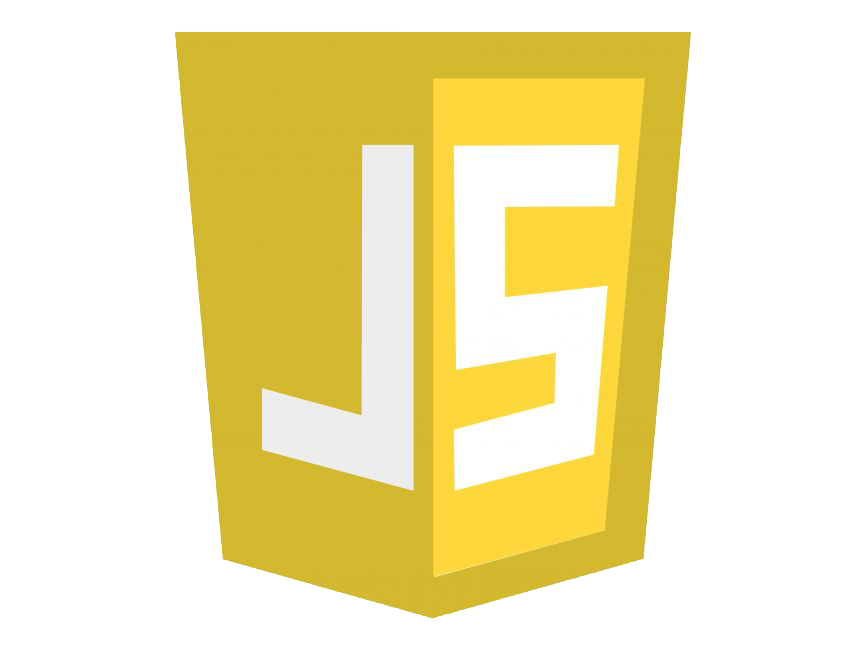
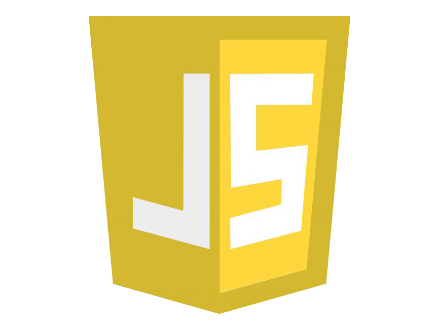

AboutMe
 Innovative and detail-oriented Fresher Front End Developer with a passion for creating responsive and user-friendly websites.
Innovative and detail-oriented Fresher Front End Developer with a passion for creating responsive and user-friendly websites.
Skilled in collaborating with back-end developers, utilizing version control systems, and staying up-to-date on emerging technologies. Proven track record in improving website traffic, performance, and functionality through the implementation of front-end coding standards and troubleshooting.I focused on JavaScript, MySQL during my Course, building skills in both front-end and back-end development.A notable project was a web development, which highlighted the importance of user-centered design. Starting my career, I'm excited to join a dynamic team and contribute to innovative projects. Alongside full stack development, I aspire to become a Full Stack Java developer and aiming to drive data-informed decisions. In my spare time, I work on personal projects, Graphic Designing, and stay updated with tech trends. I'm committed to lifelong learning and look forward to the opportunities ahead.
 
